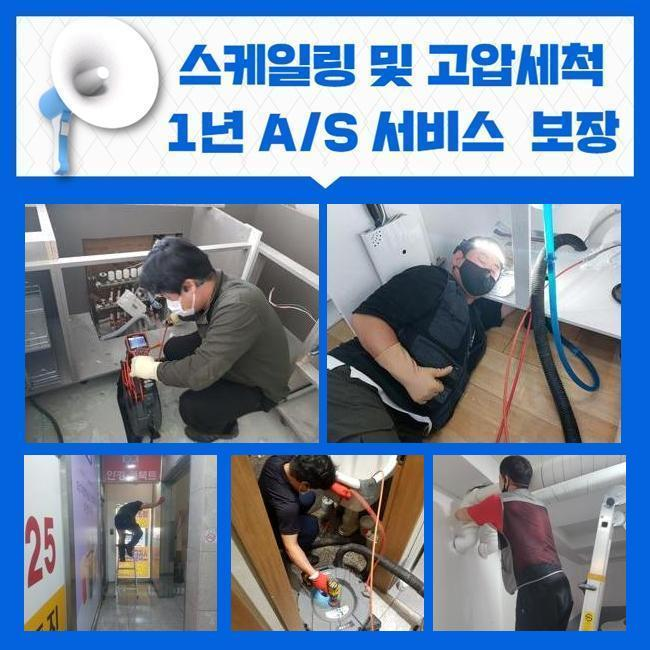
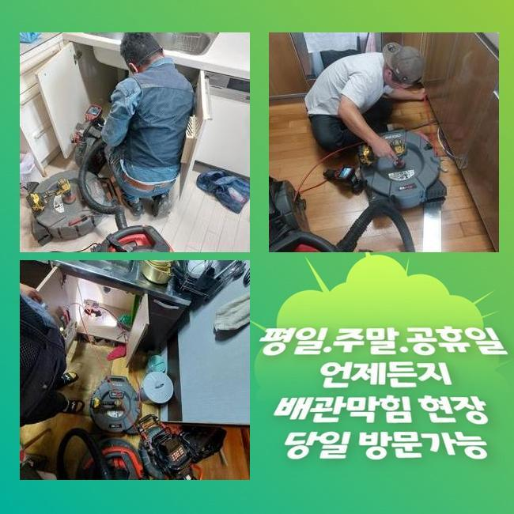
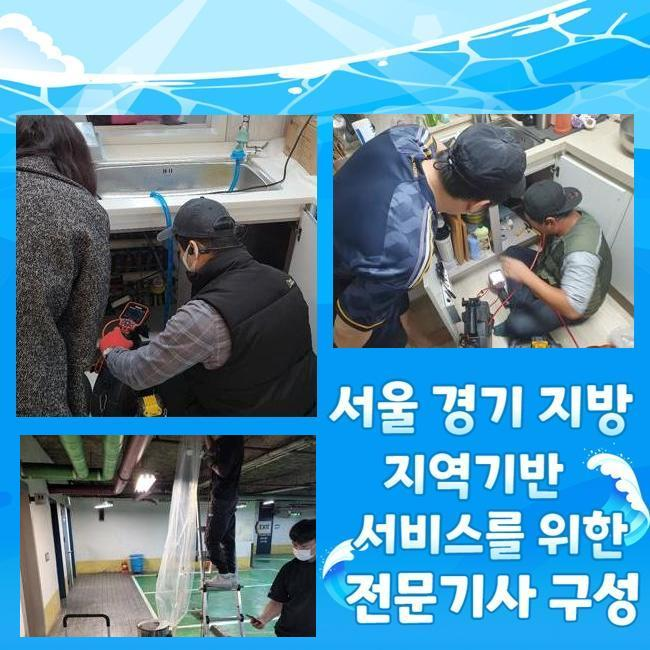
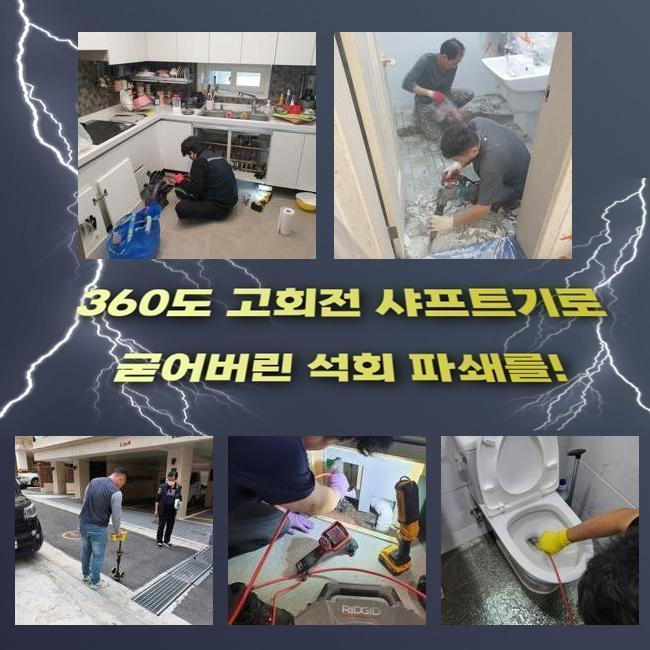
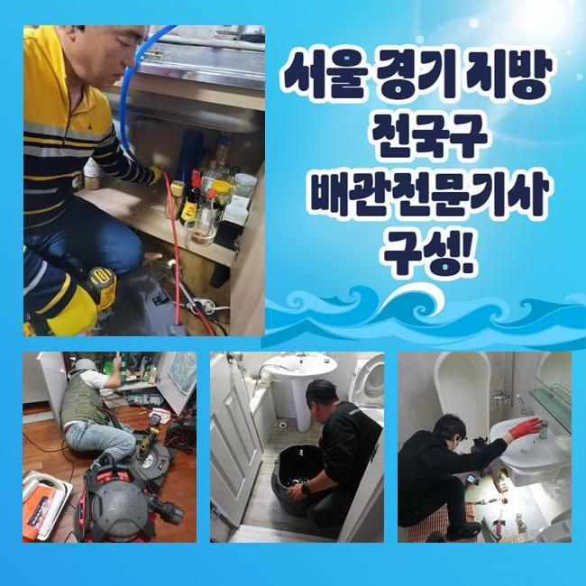

🏠 영등포 신길동씽크대역류 당산동 오수맨홀청소 배관막힘누수업체
서울 영등포구 싱크대막힘 전문 시공 후기

📋 작업 개요
- 위치: 서울 영등포구, 영등포구, 서울
- 서비스 유형: 싱크대막힘, 하수구막힘, 배관막힘, 맨홀막힘, 누수수리, 역류해결, 뚫는업체, 배관청소, 고압세척, 악취차단
- 작업 일시: 2024. 12. 23. 15:54
- 업체명: 하수구수사대 (010-5615-2118)
🔍 문제 상황
영등포 영등포동씽크대막힘 영등포본동 하수구뚫는비용 설비출장
하수구가 막혔다면 독자분들은 어떤과정을 통해 처리하시나요
배수관의 전체적인 검사와 관리는 상당히 중요한데 중간 영역이 찌꺼기로 차단되기 시작한다면 이 문제들이 점점 모든 설피에 퇴적되어 더 큰 불편을 일으킬 수 있기에 주의해야해요
하수구은 반복적인 확인과 세척을 진행하며 문제없이 기능을 지속되게 해야하며 이런 방법으로 위생 상태와 배관 설비 피해를 사전에 조치할 수 있어요
이번 사례는 식당의 배수로 종합 검사 문의를 받아 기름슬러지 클리닝을 위해 고객님의 매장을 찾아가서 하수관 막힘 세정을 실행 했던 것에 대해 설명해 드리겠습니다
우리가 찾아간 매장은 식당으로 광범위한 점검을 실행했는데요 우선 발코니 근처에 작은 싱크대가 추가로 딸려 있었어요
음식점의 주 하수배관이 막혀있는 것이 아닌 직원전용 휴게실에 있는 개수대에서 막힘문제가 있었어요
설거지대 아래에 연결된 호스를 해체한 후 내부 상황을 점검하기로 했어요
자바라를 해체하면 하수구에 진입하기 쉬워지고 막힌이유를 명확히 진단할 수 있어요
의뢰인은 주방싱크에서 배수가 잘 되지 않고 있다고 말하셨기 때문에 이 곳부터 면밀히 조사하고 배수구을 클리닝하기로 하였습니다

🔎 원인 분석
💡 전문가 진단: 정밀 진단 장비를 사용하여 슬러지의 고착 여부를 판명하고 타격/세척 작업을 실시했습니다.
주름 배관을 분리하고 나서 내시경 카메라기구를 활용해 안을 점검했는데 이 장비는 내부 상황을 360도 점검할 수 있어 막힘요인이나 구조상 문제점 등을 명확히 확인할 수 있습니다
카메라장치를 집어넣어서 안을 탐색해보니 갖가지 불순물들이 끼인 것을 파악할 수 있었어요
특히 기름잔여물과 먼지뭉텅이 등이 꽤 많이 모여있어 물 빠짐이 되지 않는 막힘요인이 되고 있었던 거죠
아무래도 설거지대는 기름찌꺼기 세정이 필수적인데 기름잔여물과 먼지뭉텅이 등이 혼합되어 단단히 막힌 걸로 판단이 되었어요
이런 이물질들은 배수구 벽 표면에 붙어 배수되는 것을 방해하는 중이었고 그 때까지 싱크대 세척 시에도 물이 원활히 빠지지 않았던 것을 의뢰인들께 다시 확인했어요
이용할 때마다 배수가 멈추는 문제가 나타났다고 했는데 불순물이 축적되어 배수로가 막히면서 물이 전혀 배출되지 않았던 것입니다
이런 상태를 해결하려면 최적의 도구를 동원해 없애주는 방법이 필요했어요
하수관에 누적된 것들을 처리하기 위한 방안으로는 부수는 방법이 가장 적합할거라 생각하고 샤프트장치를 사용해보기로 했어요
가볍게 석션장비로 빨아들이려 해도 오염물이 너무나 견고하게 고착화 되어 샤프트기기의 회전작용을 이용해 찌꺼기를 제거해야 했어요
이것을 통해 하수구 내부의 찌꺼기를 치워고 배수 작용을 원래대로 회복할 수 있도록 할 수 있을 것으로 예상되었습니다
내시경 카메라장치를 활용해 배수로 내측을 라이브로 살펴보면서 샤프트기기를 사용해 찌꺼기 깎아냈습니다

🔧 작업 과정
카메라기구를 통해 상황들을 확인하며 붙어있는 오염물질만 무사히 파쇄할 수 있도록 장치를 맞췄어요
분쇄를 하면서도 끊임없이 카메라장치를 이용하여 배수배수로 속을 확인해가며 정확하고 피해없이 실시했습니다
이 현장에서는 약제를 사용하거나 스프링 기기 를 사용하지 않고 샤프트장치를 이용해 배수관의 오염물을 효율적으로 해결 가능했습니다
샤프트기구는 빠른 회전 속도를 이용하여 굳어진 오염물을 갈아내고 찌꺼기를 석션기구로 빨아들여 치우는 절차를 통해 작업이 마무리되었습니다
이 방식을 적용하면 확학제품 이용으로 인한 위험도를 최소화하고 배수구에 타격을 발생시키지 않으며 깔끔하게 수행할 수 있어요
만일 올바르지 않은 기구를 활용해서 배수구에 충격을 주면 파이프에 손상이 생겨 더 심각한 상태를 초래할 수 있습니다
알맞은 장치를 선택하고 견고한 시공은 순전히 담당자에게 달려있으므로 실전 경험이 풍부한 전문업체에게 문의하는 것이 위험하지 않습니다
노하우가 없는 업체에 문의한다면 불편하게 재차 막힘이 생겨서 걱정이 생길 수도 있어요
곧바로 주방쪽을 체크해보니 기름잔여물로 덮힌 불순물이 상당히 배수로 내의 사정도 어김없이 상태가 좋지 않았어요
요리시에 음식에 넣는 오일류와 작은 음식물들이 관에 퇴적되어 물길이 막히는 막힌이유가 되고 있어 즉각적인 수리가 필요했죠
이렇게 단단한 찌꺼기로 하수구가 막혀버린 상황을 처리하려면 샤프트장치를 사용하여 불순물을 갈아내고 꺼내는 작업들을 마저 수행했어요
배관 세정이 끝난 다음 의뢰인에게 모니터를 통하여 배수관 속안의 상황을 설명하며 모든 찌꺼기가 처리하였음을 보여드렸습니다
샤프트기기에 끼어 나오게 된 먼지덩이가 상당히 많았습니다
원인이 도대체 뭔가 의문이 들었는데 화장실이 바깥에 있어서 의뢰인께서 휴게실을 청소한 뒤 싱크대부분에서 청소장비 속 안 먼지 필터통을 닦고있다고 하시는거예요
그렇게 자그마한 먼지뭉텅이들이 모여 주방싱크 안쪽을 막히게 만든 것 같았어요
내시경장치를 활용해 관 내측을 즉각 체크하면서 필요할 땐 샤프트장치와 석션장비를 동원해 불순물을 정리하는데 샤프트기기는 체인부위에 먼지덩어리들이 이처럼 걸려 나오는 결과가 나오기도해요


✅ 작업 완료
주방싱크와 하부 배수로를 하나하나 확인하고 깨끗이하여 모든 하수관을 원래대로 제기능을 하도록 했고 이렇듯 주방 쪽의 배수로를 면밀히 조사하고 말끔하게 하여 정체현상이 말끔히 해결되었어요
마지막으로 배수상태를 확인을 하려고 통수가 되고 있는지 파악했고 배수로가 시원하게 통수되고 있는 것을 알게되었습니다
이번과 같은 배수구 막힘상황을 사전조치하려면 외측의 요소로부터 배수로를 지키면서 불순물들이 누적되는 것을 방지하는 것이 중요합니다
하수관 입구를 덧씌워 바닥면의 오염물 진입을 막음으로써 하수관의 깨끗함을 유지해나가며 막힘 현상을 사전에 조치할 수 있으니 이와 같은 방법은 현장상태에 따라 반드시 필요해요
배수구 막힘상황으로 고민하고 있었던 의뢰인들께 하수관을 반짝반짝 청결하게 세척한 과정을 설명해 드리고 일상에서 하수관 청소 및 유지방법을 설명하면서 현장 마무리했습니다




⚠️ 베란다 누수 및 방수 관리 방법
- ✅ 비가 많이 올 때 창틀 주변이나 아래층 천장에 얼룩이 생기는지 정기적으로 확인해 보세요.
- ✅ 우수관 주변 실리콘 마감이 들뜨거나 깨진 틈새가 있는지 손상 여부를 수시로 체크하세요.
- ✅ 베란다 바닥 타일의 줄눈(메지)이 소실되면 그 틈으로 물이 침투하여 누수가 유발됩니다.
- ✅ 누수 의심 증상 발견 시 방치하면 아래층 손실이 커지므로 즉시 전문가의 진단을 받으십시오.
💡 핵심 정리
- 확실한 장비 작업(내시경 점검 및 샤프트 스케일링)으로 원인을 뿌리 뽑습니다.
- 작업 후 1년 이내에 동일한 부위 재발 시 100% 무상 A/S 서비스를 보장합니다.
- 서울 · 경기 · 인천 전 지역에 24시간 언제든 긴급 출동할 수 있도록 항시 대기 중입니다.
❓ 자주 묻는 질문 (FAQ)
🚨 서울 영등포구 싱크대막힘 문제로 고민이신가요?
정확한 원인 진단과 확실한 시공으로 재발 없는 해결을 약속드립니다.
24시간 긴급 출동 | 서울 · 경기 · 인천 전지역 | 1년 내 재발 시 무상 A/S